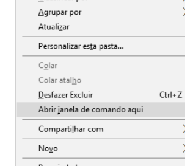

Instalar stock rom original de Fábrica Android 5.0 Lollipop para o Asus Zenfone 5 A501CG

Procedimento de reinstalação de firmware, disponivel para o dispositivo "ASUS ZENFONE 5 A501CG", voltando a versão original do sistema de forma rápida e sem nenhuma complicação. Com isso, problemas como: "Incapacidade de iniciar - Loop infinito, Travamentos, lentidões, Vírus - aplicativos instalam automaticamente - Propagandas excessivas, custom-recovery's e vários outros não irão mais o pertubarem.
Para esse tutorial você irá prescisar do ::
ADB Firmware para o Zenfone 5 UL-ASUS_T00F-WW-3.23.40.60-user.zip DriversA coversa está boa mas o que é bom mesmo é o tutorial, então, vamos lá!
- - Desligue o aparelho pois o iremos o por em modo Download.
- Pressione ao mesmo tempo as teclas VOL + e POWER por aproximadamente 8s, então solte a tecla POWER e continue pressionando VOL +.
- Na tela de Fastboot desça com a tecla de VOL - até RECOVERY e confirme com a tecla POWER para selecionar.
- Talvez você fique preso nesta parte mais para sair é só pressionar a tecla POWER seguida pelo VOL +.
- Na tela de recovery desça até APPLY UPDATE FROM ADB e confirme com a tecla Power.
- Agora conecte o seu aparelho ao PC.
- Você Já deve ter baixado os 3 arquivos listados acima, no seu pc extraia os arquivos, "ADB+Fastboot.rar" e instale os drivers USB.
- Extraia o arquivo ADB+Fastboot.rar para a raiz do disco local C: ou F: dependendo de sua máquina.
- Passe o arquivo www.soinroms.com_UL-ASUS_T00F-WW-3.23.40.60-user.zip para a pasta onde estão os arquivos ADB que acabamos por extrair.
- Abra a pasta ADB e pressione as teclas SHIFT e a tecla direita do mouse então escolha "ABRIR JANELA DE COMANDOS AQUI" com isso o prompt de comando do Windows abrirá. 
- No prompt digite adb sideload www.soinroms.com_UL-ASUS_T00F-WW-3.23.40.60-user.zip e aguarde o processo de instalação terminar.
- # Você poderá renomear essa firmware para um mais curto se preferir, ex:: zen5.zip, só não esqueça na hora de instala-lá inserir o novo nome ex:: adb sideload zen5.zip blz?!.
- O processo de instalação da Firmware terá um tempo aproximado de 5 à 6 minutos.
- Após tudo isso o dispositivo irá reiniciar, enquanto o mesmo não inicia, vá beber uma soda |--| calor né?.
- Para finalizarmos, recomendamos que faça um procedimento de Hard reset para que assim todas as funcionalidades funcionem bem. Se você não sabe como realiza-lo, clique Aqui para prosseguir.
No Celular
No PC

Ficou com alguma dúvida? Obteve erro em algum dos procedimentos? Então fique livre a deixar seus comentários logo abaixo.